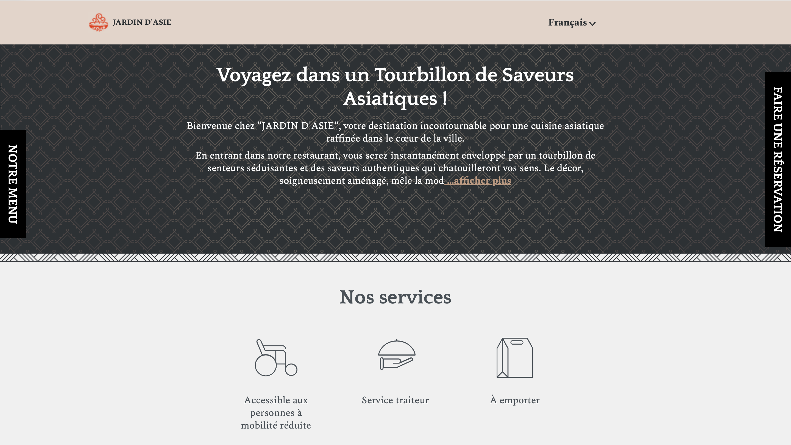
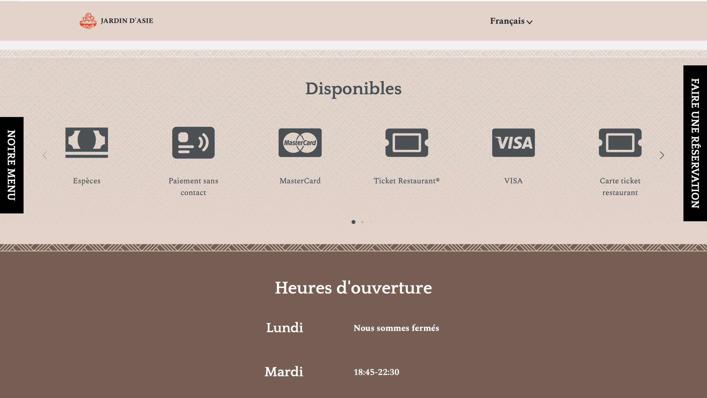
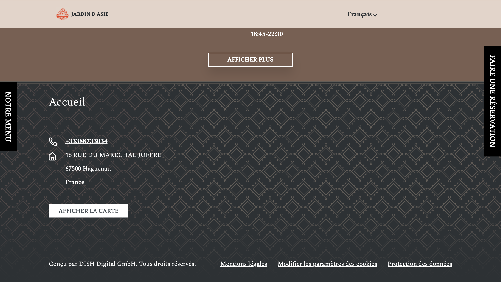
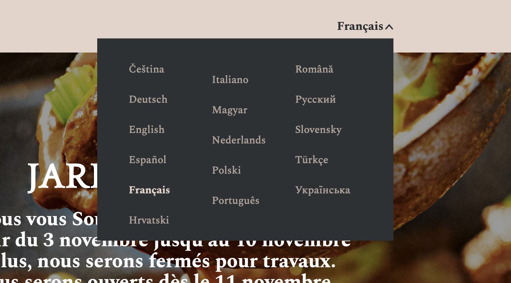
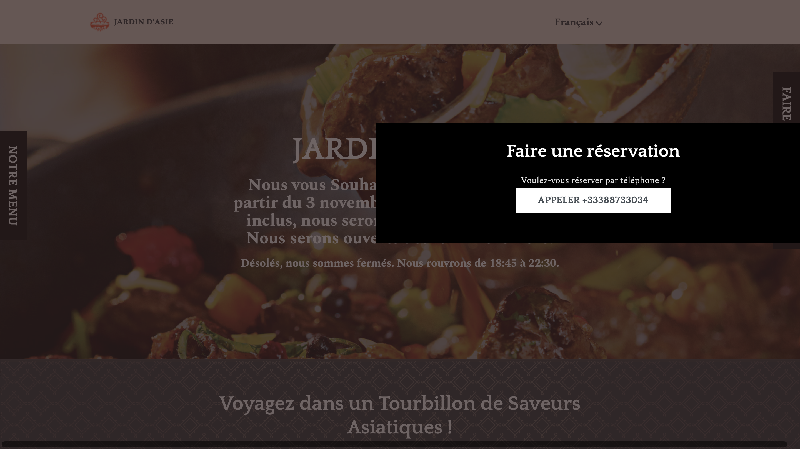

项目背景与目标
「Jardin d'Asie」是一家位于法国斯特拉斯堡的中餐厅，提供正宗中式菜品和外卖服务。餐厅此前缺少规范的线上展示渠道，菜单信息依赖纸质版或社交媒体图片传播，存在信息不完整、更新不及时、多语言支持缺失等问题，难以有效触达法语区本地顾客和外语游客群体。
基于这一需求，本人受委托为餐厅完成数字化菜单设计与线上展示平台搭建，目标是建立一个结构清晰、视觉友好、支持多语言的线上菜单页面，让顾客能够快速浏览菜品、了解价格，并通过地图定位找到餐厅。
项目的核心工作包括以下几个方面：
第一，菜单信息架构与内容设计。对餐厅现有菜品进行系统梳理，按照品类（前菜、主菜、汤品、甜点、饮品等）重新组织菜单结构，为每道菜品撰写中法双语描述，确保信息准确且符合当地消费者的阅读习惯。
第二，平台选型与搭建配置。经过对多个餐饮展示平台的调研对比，最终选择 Eatbu 作为线上菜单托管平台，因其专为餐饮行业设计，内置菜单管理、多语言切换、Google Maps 集成、移动端自适应等功能，能够以最低开发成本快速上线并持续维护。
第三，多语言配置与本地化适配。配置法语（主语言）和英语两个版本，通过 hreflang 标签实现语言切换，兼顾本地法语顾客和国际游客的使用需求。同时优化 SEO 元数据（Meta Description、Open Graph Protocol、JSON-LD 结构化数据），提升餐厅在 Google 本地搜索中的可见度。
第四，移动端体验优化。考虑到大部分顾客通过手机浏览菜单，确保页面在各种屏幕尺寸下的显示效果和交互体验，包括 Viewport 适配、触控友好的导航结构和快速加载性能。
总体而言，本项目是一次面向真实商业客户的产品设计实践，虽然技术实现依托成熟的 SaaS 平台，但在需求分析、信息架构、内容策划、平台选型和多语言本地化等产品经理核心能力维度上进行了完整的实战锻炼。
产品设计亮点
项目在真实客户需求、信息架构、平台选型、多语言本地化和移动端优化五个维度进行了完整实践。
这与课堂项目的最大区别在于：需求来自真实的商业场景，设计决策必须考虑实际运营效率、顾客行为习惯和成本约束，而非仅追求技术实现。
为每道菜品设计了标准化的信息卡片：菜品名称（中法对照）、价格、简要描述、标识（如辣度、素食标记等），确保顾客能在最短时间内找到目标菜品并完成决策。
它专为餐饮行业打造，零开发成本即可获得专业的菜单展示页面；内置 Google Maps 集成方便顾客导航；支持多语言切换满足国际化需求；响应式设计确保移动端体验；且餐厅方可自主更新菜品和价格，降低长期维护成本。这一选型思路体现了产品经理在技术方案和商业价值之间寻找最优平衡点的能力。
同时对 SEO 进行了系统优化：设置了精准的 Meta Description 和 SEO Title；使用 JSON-LD 结构化数据标注餐厅地址（PostalAddress Schema）和营业信息，提升 Google 本地搜索排名；配置 Open Graph Protocol 确保社交媒体分享时展示正确的餐厅信息和预览图。
通过 Viewport Meta 配置和响应式布局确保在不同手机屏幕上的阅读体验；菜单分类导航清晰可触达；菜品卡片信息密度适中，避免小屏幕上的信息过载；页面加载速度通过 CDN 分发优化，确保顾客在餐厅 WiFi 或移动网络下都能快速打开。
线上页面展示
菜单页面已上线运营，支持法英双语、Google Maps 导航和移动端完美适配。






成果与收获
项目最终成功上线并投入实际运营，餐厅 Jardin d'Asie 的数字化菜单通过 jardin-dasie.eatbu.com 面向顾客提供服务。页面支持法英双语切换、Google Maps 导航、移动端完美适配，满足了餐厅日常运营的线上展示需求。
产品思维提升方面，通过这个项目深刻体会到：面对真实的商业需求，最优方案不一定是从零开发，而是在理解用户场景和业务约束后，选择最合适的技术路径。平台选型本身就是一项重要的产品决策，需要综合考虑功能匹配度、开发成本、维护成本和可扩展性。
实战能力方面，积累了完整的从需求对接 → 信息架构 → 内容策划 → 平台配置 → 多语言本地化 → SEO 优化 → 上线交付的项目经验。这些能力直接对应产品经理在实际工作中需要处理的核心任务：理解用户、定义产品、选择方案、推动落地。